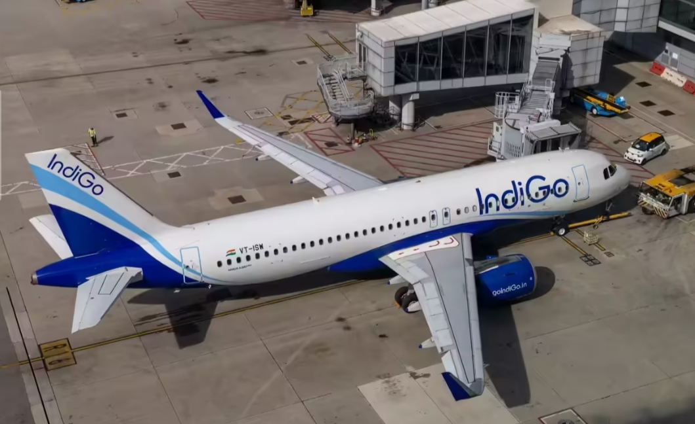
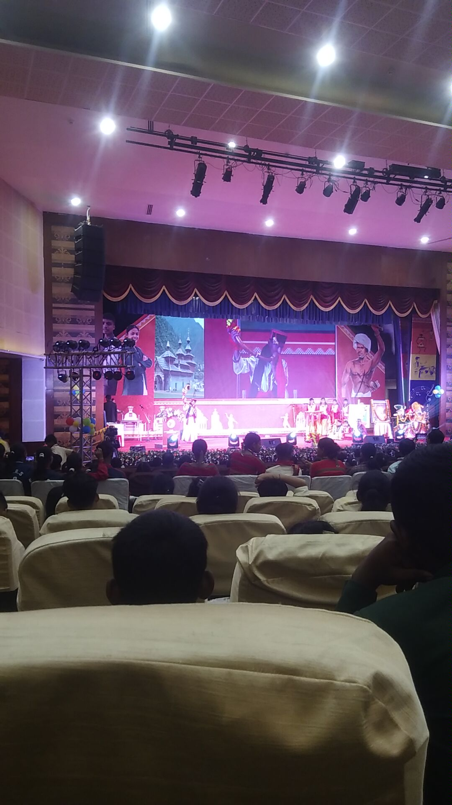
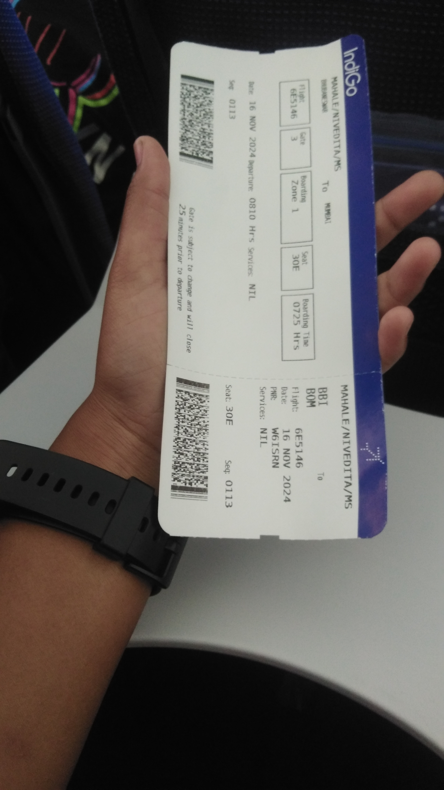
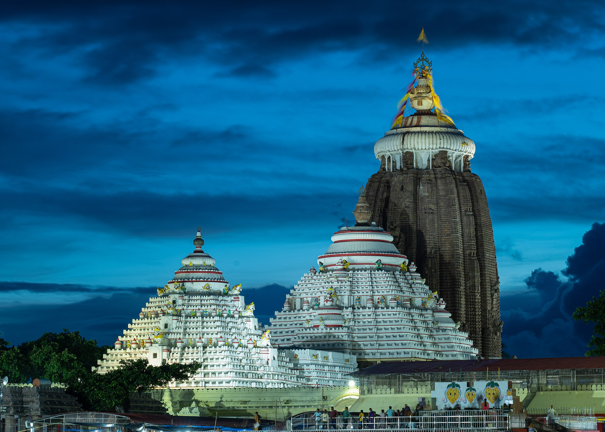
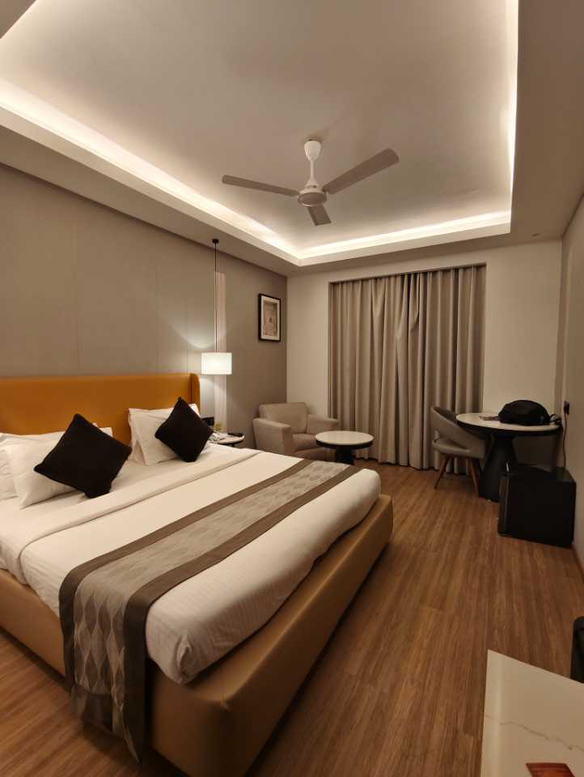
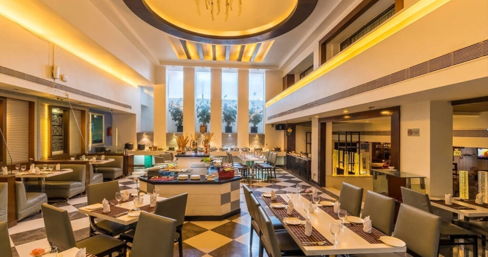
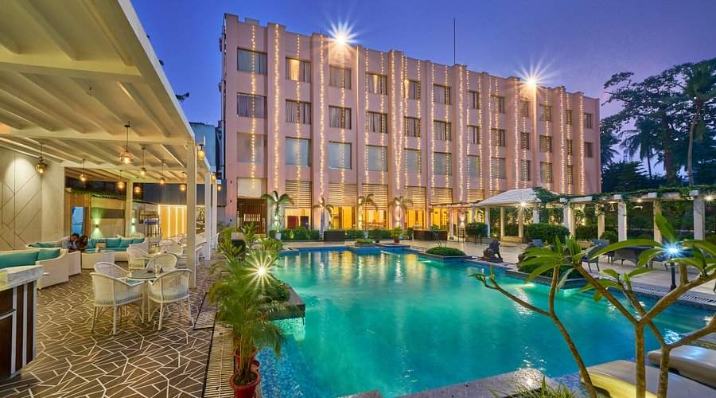

🎨 The Beginning — 2024
In 2024, I participated in the Cultural Fest for the first time in the 2-D Painting category.
At that time, I had no idea that this small beginning would eventually take me all the way to the National Level.
🏆 Cluster Level — 1st Place
The Cluster Level competition was held at Ajmer Saundane.
I gave my best in the 2-D Painting competition and secured 1st place.
That moment gave me a lot of confidence and made me believe that I could go even further.
🥇 State Level — 1st Place
The State Level competition was held at our own school, EMRS Pimpri.
Once again, I participated in 2-D Painting and secured 1st place.
When I went onto the stage, all the students started cheering, shouting and whistling loudly. That moment became one of the most unforgettable moments of my journey.
🇮🇳 The News That Changed Everything
Then came the moment I will never forget.
Ojaswini Ma'am told me that the National Level competition would be held in Odisha and that the government would provide flights for travelling.
Hearing that I was going to travel by plane for a National Level competition made me extremely excited. It was a feeling I could hardly express in words.
From our school, only two students were selected for the National Level — me and Nivedita.
✈️ My First Flight
When the day finally arrived, we travelled by an AC bus to Chhatrapati Shivaji Maharaj International Airport, Mumbai.
After checking and security procedures, we finally entered the airport and boarded the plane.
Nivedita and I were sitting together. When the plane started taking off, I felt a completely different kind of happiness and excitement.
It was my first flight — and it was happening because of my passion for painting.
🌴 Welcome to Odisha
Our plane landed at Bhubaneswar Airport. We collected our bags and waited for our transport.
Soon, a large AC bus arrived to take us to our hotel. And that was the beginning of our unforgettable stay in Odisha.

🏨 Our 10-Day Stay
We stayed in the same hotel for around ten days. Our room had a TV, AC, refrigerator, washroom, balcony, cupboard and a comfortable sofa.


🛕 Exploring Odisha
On the first day, we were taken to some of the famous places of Odisha.
We got the opportunity to experience the culture, history and beauty of the state, including the famous Jagannath Temple.


🎨 The National Competition
From the second day onwards, our competition began. It was held at a university.
Every day, a bus came to take us from the hotel to the university.
For several days, we participated in different activities while representing our schools and states.
I was representing my school in the 2-D Painting category.
📸 Memories Beyond Competition
The journey was not only about competition. I met students from different places, travelled with them, explored Odisha and experienced many things for the first time.

🏅 The Final Result
After ten unforgettable days, the final day arrived — the day of the prize distribution.
Nivedita secured 1st place in Mimicry.
And I secured 2nd place in 2-D Painting at the National Level.
Standing there with a National Level achievement was one of the proudest moments of my journey.

🎥 A Memory in Motion
Some memories are better experienced than explained. Here is a video from my journey.
✨ More Than Just a Competition
This journey taught me that a small beginning can lead to something much bigger than we imagine.
From Cluster Level to State Level and finally the National Level in Odisha — every step gave me confidence, memories and a reason to keep creating.
This wasn't just a competition. It was a chapter of my life that I will remember forever. ❤️